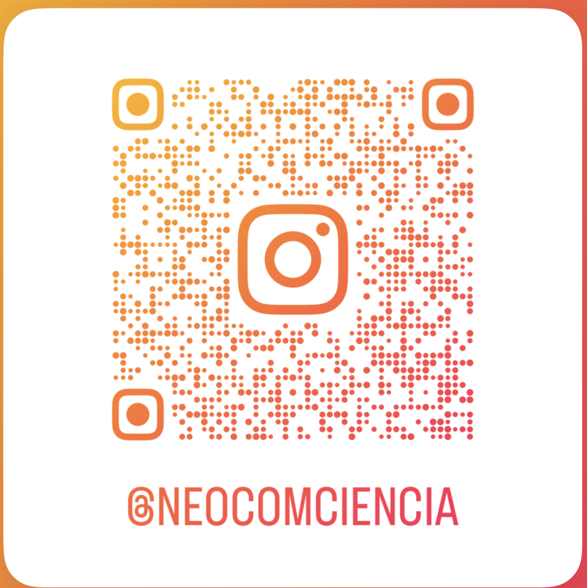

10 O que é divulgação científica?
Roteiro de aula elaborado no RStudio com o auxílio da inteligência artificial, revisado e avaliado pelo autor antes de sua publicação.
10.1 Contextualização
Algumas descobertas científicas chegam ao público em segundos — e outras ficam presas em artigos que ninguém lê…
A divulgação científica é a resposta a esse problema. Trata-se de uma prática comunicativa voltada a tornar o conhecimento científico acessível a quem não teve formação na área — traduzindo jargões, aproximando a ciência do cotidiano e permitindo que a sociedade participe dos debates que a afetam diretamente.
Fazer divulgação científica não é simplificar a ciência. É comunicar com responsabilidade: sem distorcer os dados, sem prometer o que a ciência não garante e sem subestimar o público.
Ao final desta aula, você será capaz de:
- identificar as principais estratégias de comunicação científica eficaz em mídias digitais;
- analisar criticamente exemplos reais de divulgação científica no Instagram;
- aplicar essas estratégias na produção da sua própria mídia.
Leituras indicadas
DHANESH, G.; DUTHLER, G.; LI, K. Social media engagement with organization-generated content: Role of visuals in enhancing public engagement with organizations on Facebook and Instagram. Public Relations Review, v. 48, p. 102174, 2022. DOI: 10.1016/j.pubrev.2022.102174.
HWONG, Y. et al. What makes you tick? The psychology of social media engagement in space science communication. Computers in Human Behavior, v. 68, p. 480–492, 2017. DOI: 10.1016/j.chb.2016.11.068.
JARREAU, P. B.; DAHMEN, N. S.; JONES, E. Instagram and the science museum: a missed opportunity for public engagement. Journal of Science Communication, v. 18, n. 02, art. A06, 2019. DOI: 10.22323/2.18020206.
MARTIN, C.; MACDONALD, B. H. Using interpersonal communication strategies to encourage science conversations on social media. PLoS One, v. 15, n. 11, art. e0241972, 2020. DOI: 10.1371/journal.pone.0241972.
NGUYEN, H.; DIEDERICH, M. Facilitating knowledge construction in informal learning: A study of TikTok scientific, educational videos. Computers & Education, v. 205, p. 104896, 2023. DOI: 10.1016/j.compedu.2023.104896.
10.2 Conceitualização: Por que divulgação científica importa agora?
A pandemia da COVID-19 e a crise climática, por exemplo, são fenômenos que colocaram cientistas no centro do debate público como raramente havia acontecido antes. O interesse da população pela ciência cresceu — inclusive como opção de carreira.
👉 Veja o que aconteceu com as buscas pelo termo “epidemiologista” no Google entre 2019 e 2025:
Google Trends: buscas por “epidemiologista” no Brasil (2019–2025)
Ao mesmo tempo, a ciência passou a ser contestada por discursos negacionistas — e a velocidade da desinformação superou, em muitos casos, a velocidade da comunicação científica responsável:
É #FAKE que aplicar perfume no pescoço faz mal à tireoide
É #FAKE que ‘água de abacaxi quente’ cura câncer
O problema não é a falta de ciência — é a falta de comunicação científica de qualidade.
10.3 Conceitualização: O que conta como divulgação científica?
Divulgação científica é qualquer atividade que leve conhecimento científico para além dos muros da academia, em linguagem acessível ao público não especializado.
Quem é o público não especializado?
Pesquisas sobre engajamento em mídias sociais indicam que o público de conteúdo científico no Instagram e no TikTok toma decisões rápidas sobre o que assistir — e que fatores como autenticidade, clareza visual e relevância percebida são determinantes para manter a atenção (Hwong et al., 2017; Nguyen; Diederich, 2023).
Os gêneros de divulgação científica são diversos:
Impressos e digitais
Artigos de revistas especializadas em linguagem acessível: Superinteressante | Galileu | Pesquisa FAPESP | Ciência Hoje
Livros de divulgação científica: Uma breve história do tempo | Uma Breve História de Quase Tudo | Sapiens | Astrofísica para Apressados
Audiovisuais e interativos
- Vídeos, reels, podcasts, newsletters, TED Talks, lives científicas, postagens em redes sociais.
O gênero importa menos do que a decisão comunicativa: para quem estou falando, em que contexto e com qual objetivo?
10.4 Conceitualização: Redes sociais e divulgação científica
As redes sociais são hoje o principal canal de acesso à informação científica para o público jovem — e também o principal vetor de desinformação. Esse paradoxo torna a presença qualificada da ciência nessas plataformas não apenas desejável, mas necessária.
As redes sociais são ambientes férteis para o aprendizado informal, permitindo que pessoas aprendam, compartilhem e construam conhecimento em comunidade. Contudo, presença nas redes não garante engajamento. O fator decisivo está em como os recursos verbais e visuais são mobilizados.
As seções seguintes apresentam as principais estratégias identificadas pela pesquisa acadêmica — cada uma ilustrada por um exemplo real. Para cada reel, há uma pergunta para você pensar antes de seguir.
Estratégias
Comunicação interpessoal e humanização
Mostrar o rosto e falar diretamente para a câmera
Divulgadores que usam a própria imagem transmitem autenticidade e convidam à interação. Isso humaniza o comunicador e fortalece o vínculo com o público — a ciência deixa de ser uma instituição abstrata e passa a ter rosto.
Analise o vídeo a seguir e responda: - O divulgador fala diretamente para a câmera ou usa apenas texto e imagens? - Como o uso da própria imagem afeta a sua percepção sobre a credibilidade do conteúdo? - Você confiaria mais nesse conteúdo do que em uma postagem só com texto? Por quê?
Mesclar ciência com conteúdo cotidiano e relacionável
Alternar entre publicações científicas e conteúdos mais leves — humor, cotidiano, entretenimento — torna o comunicador mais acessível. O público tende a seguir pessoas com quem se identifica, não apenas fontes de informação.
Analise o vídeo a seguir e responda: - Qual é o tom deste reel — formal, informal, humorístico? - Esse tom tornaria você mais ou menos propenso a compartilhar o conteúdo? Por quê? - Esse tipo de abordagem compromete a credibilidade científica ou a reforça?
Usar pronomes de primeira e segunda pessoa
O uso de “eu”, “você”, “nós” e similares cria proximidade e transforma o monólogo científico em conversa. É uma das estratégias linguísticas mais simples e mais eficazes para engajamento.
Analise o vídeo a seguir e responda: - Localize pelo menos uma frase em que o divulgador usa “você” ou “nós”. Qual é o efeito dessa escolha? - Como seria diferente se o mesmo conteúdo fosse apresentado na terceira pessoa, como em um artigo científico?
Conteúdo visual e narrativo
Usar imagens, vídeos, memes e GIFs
Recursos visuais são fundamentais para capturar a atenção nos primeiros segundos — que são os mais decisivos para o algoritmo e para o espectador.
Analise o vídeo a seguir e responda: - Que tipo de recurso visual foi usado neste reel? - Ele facilita ou dificulta a compreensão do conteúdo científico? - O visual poderia ser substituído por texto escrito sem perda de impacto? Por quê?
Contar uma história com as imagens
Imagens que narram uma sequência ou representam uma ação são mais engajadoras do que imagens estáticas ou meramente decorativas. A narratividade visual ativa emoções e conecta o espectador ao conteúdo.
Analise o vídeo a seguir e responda: - Há uma progressão narrativa nas imagens — começo, meio e fim? - Qual emoção esse reel provoca em você? Como isso se relaciona com o conteúdo científico apresentado?
Usar linguagem que ativa a imaginação visual
Palavras como “imagine”, “veja”, “observe” e “enxergue” convidam o espectador a construir mentalmente uma imagem — o que aumenta o envolvimento cognitivo com o conteúdo.
Analise o vídeo a seguir e responda: - Você consegue identificar alguma palavra ou frase que convida o espectador a “ver” algo mentalmente? - Esse recurso torna o conteúdo mais ou menos acessível para quem não conhece o tema?
Composição visual equilibrada
Imagens visualmente harmoniosas — com boa iluminação, enquadramento centrado e ausência de elementos que distraiam — favorecem a recepção positiva e transmitem profissionalismo sem necessariamente exigir equipamento caro.
Analise o vídeo a seguir e responda: - O que você nota primeiro ao ver este conteúdo — o visual ou o texto? - A qualidade visual influencia a sua percepção sobre a confiabilidade do conteúdo científico? Deveria influenciar?
Ângulo e distância da câmera
Planos distantes ou em ângulo baixo (câmera de baixo para cima) podem amplificar o impacto emocional e estético de uma imagem — uma escolha que comunica antes mesmo que qualquer palavra seja dita.
Analise o vídeo a seguir e responda: - De que ângulo a cena foi filmada? O que isso sugere ou enfatiza? - Esse recurso poderia ser reproduzido com um celular comum? Como?
4.3 Tom, emoção e engajamento
Linguagem clara, analítica e informativa
Publicações que explicam com clareza — sem jargão, com lógica discernível — tendem a gerar comentários que também compartilham conhecimento, criando uma cadeia de aprendizagem coletiva.
Analise o vídeo a seguir e responda: - Você conseguiria explicar o conteúdo deste reel para outra pessoa em uma frase? Se sim, a comunicação foi eficaz. - Há termos técnicos? Eles foram explicados ou pressupostos?
Expressar emoções autênticas
Alegria, indignação, surpresa ou preocupação — quando genuínas — fortalecem o impacto da mensagem e ampliam o engajamento. O público identifica e reage ao que é autêntico.
Analise o vídeo a seguir e responda: - Que emoção o divulgador expressa? Ela parece genuína ou encenada? - Essa emoção reforça ou distrai do conteúdo científico? - Há risco de que a emoção substitua o argumento? Como evitar isso?
Autenticidade e tom tentativo
Admitir dúvidas, limitações ou incertezas — em vez de apresentar a ciência como um conjunto de verdades absolutas — é valorizado pelo público e gera mais confiança do que a certeza performática.
Analise o vídeo a seguir e responda: - O divulgador admite alguma limitação, dúvida ou incerteza? - Como isso afeta a sua percepção sobre a credibilidade do conteúdo? - Qual é a diferença entre dizer “a ciência prova que…” e “pesquisas sugerem que…”?
Chamadas para ação e perguntas ao público
Frases como “O que você pensa sobre isso?” ou “Marque alguém que precisa saber disso” transformam o espectador passivo em participante ativo — e ampliam o alcance orgânico do conteúdo.
Analise o vídeo a seguir e responda: - Há uma chamada para ação neste reel? Onde ela aparece — no início, no meio ou no final? - Você se sentiria motivado a responder ou compartilhar? O que provocou essa reação?
Humor e relatabilidade
Conteúdo que desperta empatia ou provoca riso facilita o engajamento. O humor bem dosado é um catalisador poderoso — desde que não comprometa a precisão científica.
Analise o vídeo a seguir e responda: - O humor facilita ou distrai da mensagem científica neste caso? - Existe um ponto em que o humor pode comprometer a credibilidade do conteúdo? Como identificar esse limite?
Outras estratégias
- Brevidade: vídeos de até 2 minutos com mensagem direta são mais eficazes em plataformas como Instagram e TikTok.
- Responder comentários: cria relação com a audiência e prolonga o engajamento após a publicação.
- Hashtags com critério: conectam o conteúdo a comunidades temáticas e ampliam o alcance sem spam.
Nenhuma dessas estratégias funciona isolada — e nenhuma substitui a qualidade do conteúdo. O que você vai comunicar precisa ser verdadeiro, relevante e verificável. Como você vai comunicar é o que determina se alguém vai ouvir.

Para a próxima aula:
Para a próxima aula, traga um artigo científico impresso. O tema do artigo deve ter relação com o tema do seu projeto de pesquisa. É importante que o artigo tenha sido publicado em uma revista do estrato Qualis A ou B.